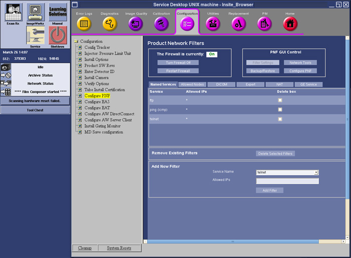
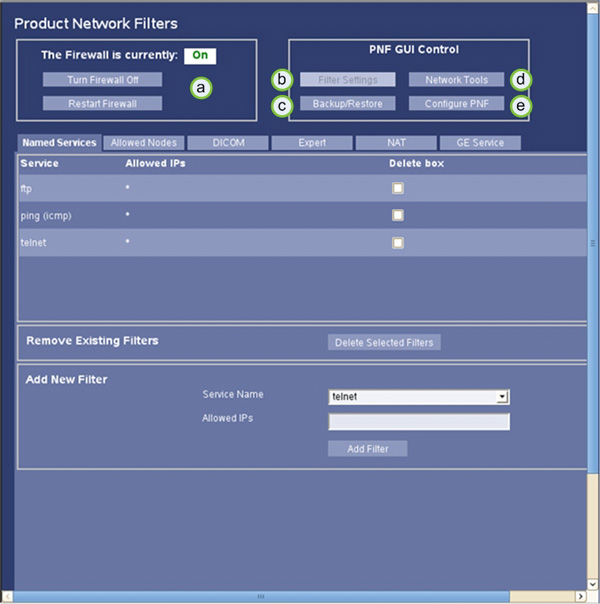
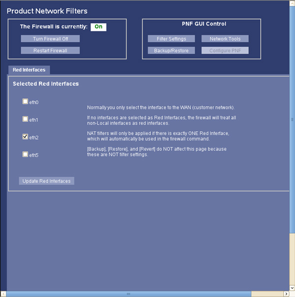
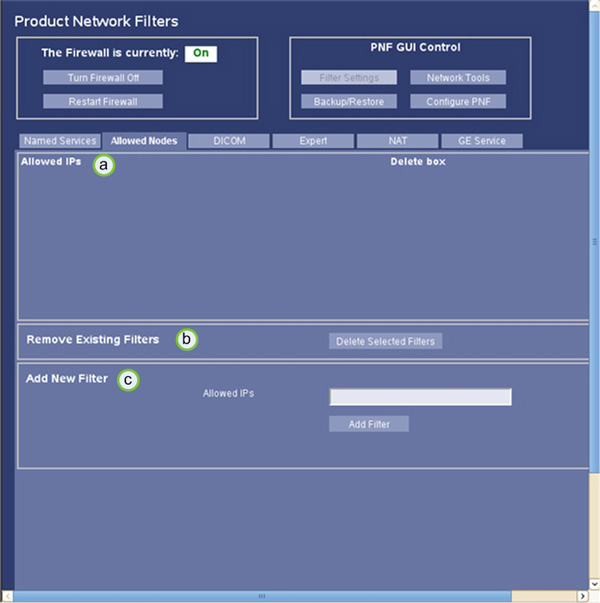
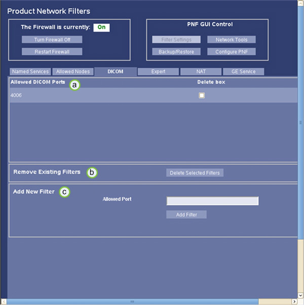
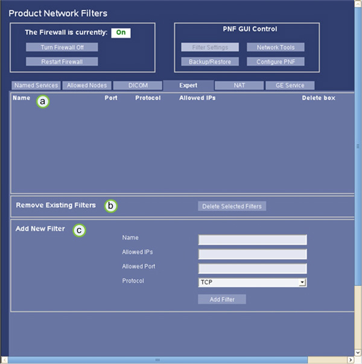
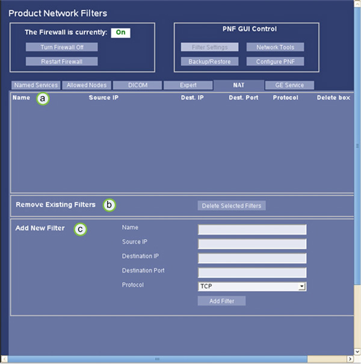
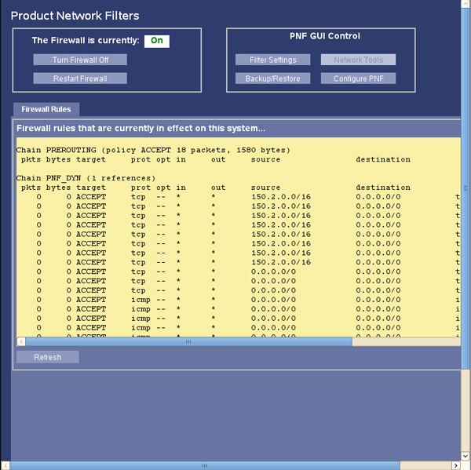
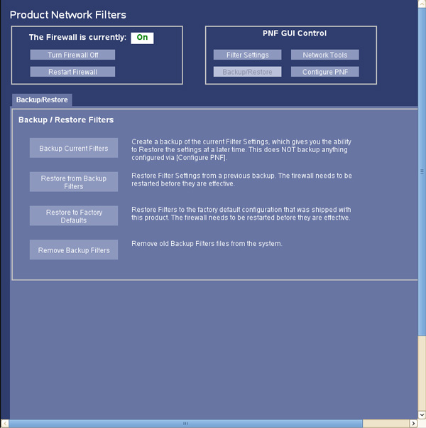

Operating Documentation
Direction 5193574-800, Rev# 22
LightSpeed 7.X Service Methods
Module Version 1.0, Version Date 7/24/13
Operating Documentation |
Product Network Filters (PNF) is a software tool that allows a site Network Administrator to control traffic to and from the site's internal network to the Diagnostic Imaging System.
Application software must be up.
Click the [Service] icon to access the Common Service Desktop (CSD).
Select the following: Configuration → Configure PNF
The Main PNF Screen is displayed .
Illustration 1: Configure PNF - CSD, Configuration Tab

| NOTE: | The GE Service Tab on the Filter Settings Page may not be available on all systems. |
| ||||
| ALL settings made in the PNF Tool are saved on the System State (Reconfig Info). If a NEW load from cold should need to be performed, the PNF settings will be restored during the System State Restore. | ||||
| ||||
| The firewall should be ON at all times; this is the default setting. If issues are found because of the firewall, contact the OLC connectivity team to resolve issues. It is not acceptable to leave the firewall OFF. | ||||
Illustration 2: Main PNF Screen

| Item | Description |
| a | Firewall On/Off and Restart Buttons |
| b | Filter Settings Page Selector |
| c | Backup/Restore Page Selector |
| d | Network Tools Page Selector |
| e | Configure PNF Page Selector |
In order to turn the firewall ON, OFF or Restart: (See Item A in illustration above).
Click the Firewall On / Off button, turn firewall On or Off.
Click the [Apply ] button.
To restart the firewall, click the [Restart Firewall] button.
The Firewall On/OFF and Restart buttons are common across all tabs in the PNF tool pages. These buttons can be clicked at any time and in any tab. The function of that button will be applied by the tool at the current state of all tabs.
This section is used to select the different configuration pages in the PNF Tool. (See Items B-E in Illustration above.)
The PNF GUI Control buttons are common across all tabs in the PNF tool pages. These buttons can be clicked at any time switch the configuration page desired.
The Configure PNF Page allows for the setting of the Ethernet Port assignment used for the Hospital Network, for which the firewall will govern.
Illustration 3: Configure PNF Page

| ||||
| CT750HD systems with GOC6.6 Console must select eth2 for Hospital Network | ||||
Click on appropriate Ethernet Port that is assigned and physically connected to the Hospital Network. (See Selected Red Interfaces section in Illustration 3).
Click [Update Red Interfaces] to save Ethernet Port assignment.
The Named Services Tab, is the screen where the site's network administrator selects a standard networking service to dictate network traffic to or from this system to the site's network.
Illustration 4: Filter Settings Page - Name Service Tab

| Item | Description |
| a | Services Enabled Section |
| b | Service Removal Section |
| c | Service Addition Section |
To add a network service, click the drop-down menu labeled Service Name (Item C - Illustration 4) for a list of standard Networking Services.
Standard Networking Services offered are:
ftp
http
https
ldap
ntp
ping (icmp)
portmap
rexec
rlogin
rsh
ssh
ssl / tls
telnet
tftp
If desired, the Named Service may be restricted for use by a specific IP Address(es). Add IP Address(es) in the Allowed IPs box. (See Item C - Illustration 3).
Click [Add Filter] (See Item C - Illustration 4). This Name Service is now added to the list.
To delete a Named Service, check the [Delete Box] (See Item A - Illustration 4) next to the Name Service on the list.
Click the [Delete Selected Filter] button (See Item B - Illustration 4).
The Allowed Nodes tab is where the IP address(es) are entered to allow these address(es) trough the firewall.
Illustration 5: Filter Settings Page - Allowed Nodes Tab

| Item | Description |
| a | Allowed IPs Section |
| b | IP Removal Section |
| c | IP Addition Section |
Enter the IP address in the Allowed IPs box located in the Add New Filter section (See Item C - Illustration 5).
Click [Add Filter] (See Item C - Illustration 5). This IP Address is now added to the list.
Check the [Delete Box] next to the Allowed IPs (See Item A - Illustration 5) in the list.
Click the [Delete Selected Filters] button to remove the Allowed IPs from the list (See Item B - Illustration 5).
The DICOM screen may be used to verify that the correct DICOM port was populated during installation. This field should be auto-populated during the initial setup of the DICOM ports. Additional DICOM ports can also be added at this screen.
Illustration 6: Filter Settings Page - DICOM Tab

Enter the Port Number in the Allowed Ports box located in the Add New Filter section (See Item C - Illustration 6).
Click [Add Filter]. (See Item C - Illustration 6). This DICOM Port is now added to the list.
Check the [Delete Box] next to the DICOM Port in the list (See Item A - Illustration 6) in the list.
Click the [Delete Selected Filters] button to remove the DICOM Port from the list (See Item B - Illustration 6).
The Expert Tab gives the network administrator the ability to create rules for the network services allowed in the Named Services screen.
Illustration 7: Filter Settings Page - Expert Tab

To create a rule for the firewall, enter the application name in the Name field. (See Item C - Illustration 7).
Enter the IP Address/es in the Allowed IPs field.
Enter the Port in the Allowed Port field.
Click on the Protocol drop-down menu for the rule to be applied (ex: all, tcp, udp).
Once all fields have been populated, click [Add Filter] button.
Check the [Delete Box] next to the Name in the list (See Item A - Illustration 7).
Click the [Delete Selected Filters] button to remove the rule from the list (See Item B - Illustration 7).
The NAT Tab gives the network administrator the ability to create rules for the network services allowed in the Named Services screen, but with specific source and destination routing.
Illustration 8: Filter Settings Page - NAT Tab

To create a rule for the firewall, enter the application name in the Name field. (See Item C - Illustration 8).
Enter the Source IP Address in the Source IP field.
Enter the Destination IP Address in the Destination IP field.
Enter the Destination Port in the Destination Port field.
Click on the Protocol drop-down menu for the rule to be applied (ex: all, tcp, udp).
Once all fields have been populated, click [Add Filter] button.
Check the [Delete Box] next to the Name in the list (See Item A - Illustration 8).
Click the [Delete Selected Filters] button to remove the rule from the list (See Item B - Illustration 8).
The Network Tools Page displays all active firewall rules presently running on the system.
Illustration 9: Network Tools Page

The Backup/Restore Page allow for local (on system) backup of PNF configuration data. This feature should be used before modifying any setting, such that a restore point is created in the event mistakes are made or configuration is corrupted. The backup can then be restored to return normal operation. Follow on screen instructions.
Illustration 10: Backup/Restore Page

Troubleshooting the firewall can be done by turning the firewall On and Off.
| ||||
| The firewall should be ON at all times, this is the default setting. If issues are found because of the firewall, contact the OLC connectivity team to resolve issues. It is not acceptable to leave the firewall OFF. | ||||
When all the necessary changes/settings have been made, perform the following steps:
Turn off the telnet port via instructions found in Named Services tab: Section 5.1.
| NOTE: | Turn off the telnet port to make the system most secure. |
Perform a Save System State to capture PNF Configuration settings and rules in System State backup. Perform the Software (GOC6.6) → Software Installation Procedures → NIO64HD (GOC6.6) System State Save Restore instructions from the procedure list.